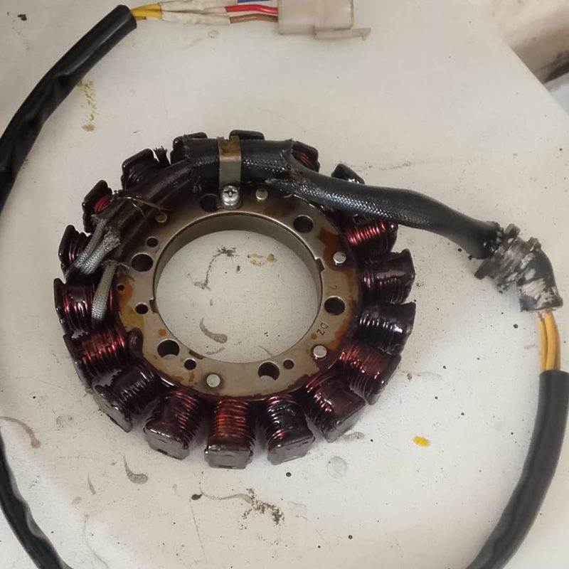
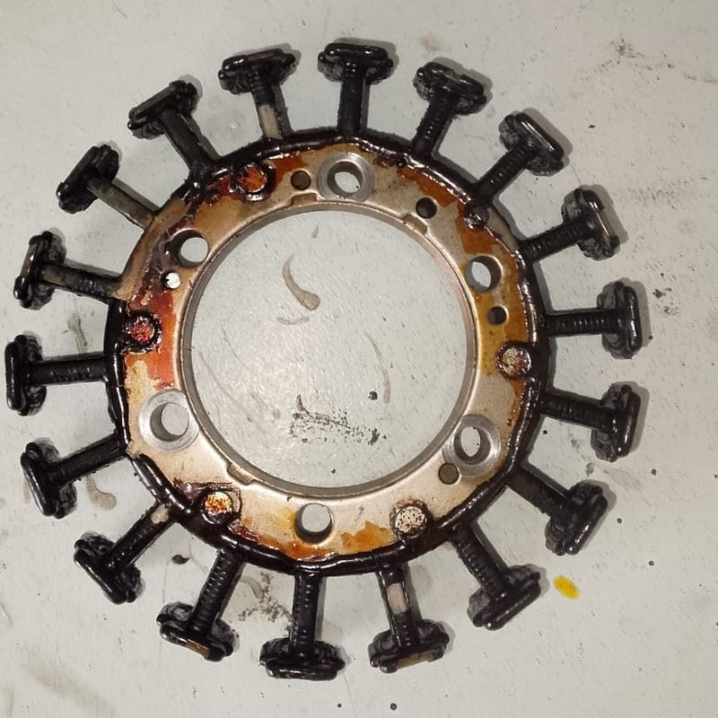
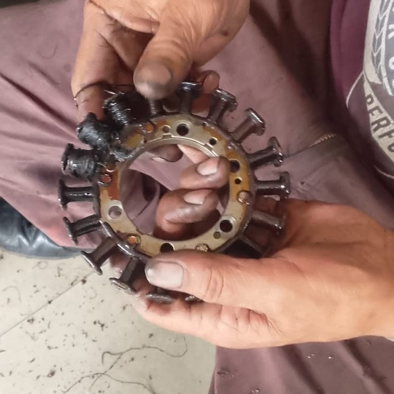
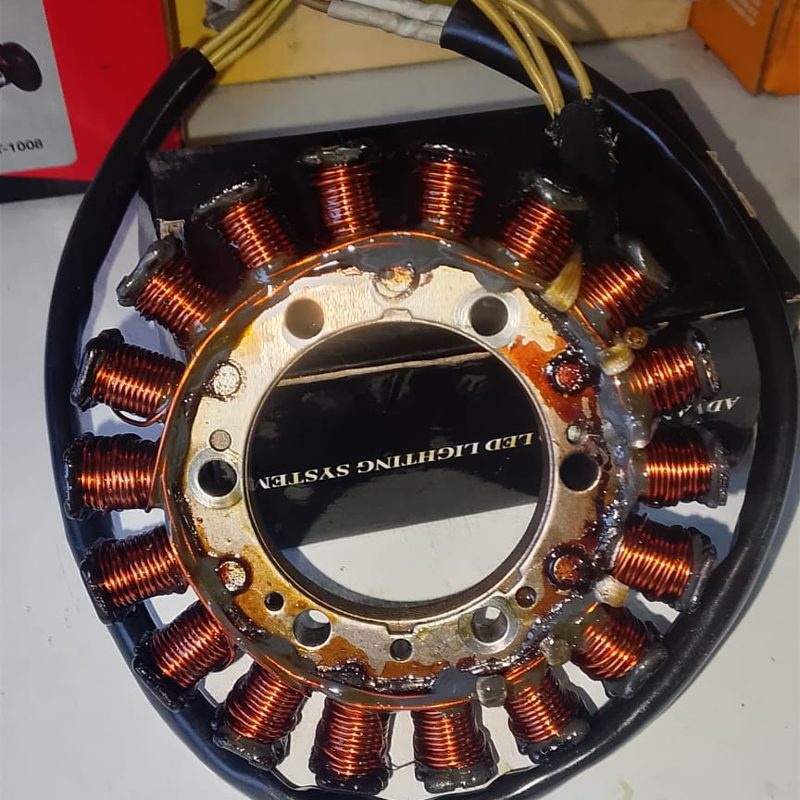
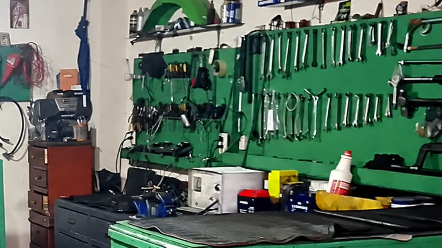
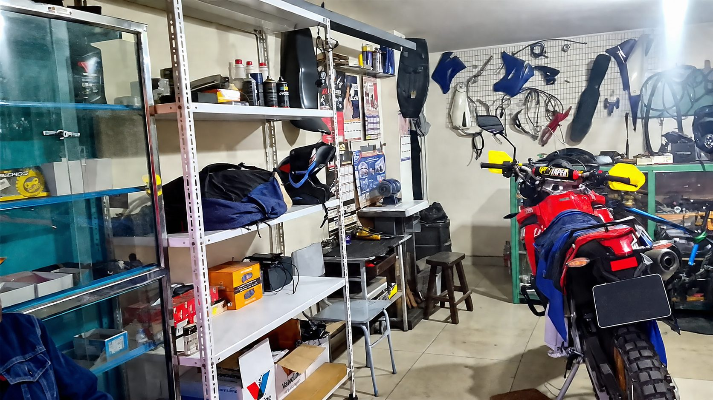
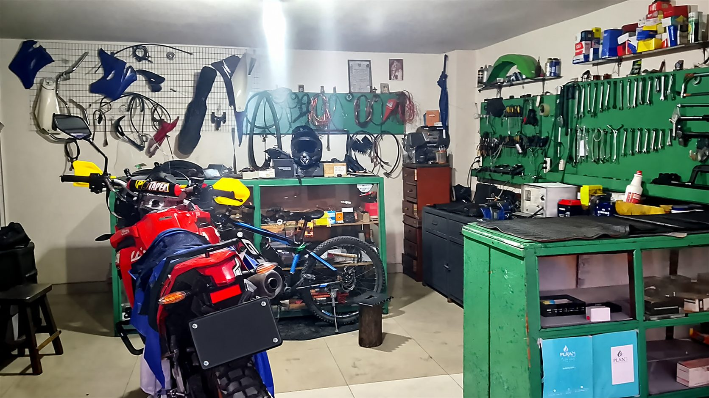

Si es eléctrico, aquí se arregla. Rebobinado de estatores y bobinas de encendido para motos chinas y japonesas, sistema eléctrico, motores de arranque y baterías. Atendemos en Ibarra y recibimos tu estator desde cualquier ciudad del Ecuador por Servientrega.
⚡ ¿Tu moto no carga? Rebobinamos estatores · Ver el trabajo ↓Retiramos el bobinado quemado, limpiamos el núcleo y lo rebobinamos con alambre nuevo. Mira el trabajo real, paso a paso.




Rebobinamos estatores que llegan desde Quito, Guayaquil, Cuenca y todo el país. Tú lo envías a la agencia y nosotros lo retiramos. Ver cómo enviar →
Muchos clientes nos escriben pidiendo “bobinas de carga y de encendido” porque la moto no carga la batería o no tiene chispa. Son dos piezas distintas y las revisamos las dos:
A veces la falla no está donde parece: una moto sin chispa puede tener el estator quemado, el CDI dañado o la batería descargada. Por eso hacemos el diagnóstico completo antes de reparar, en motos Yamaha, Honda, Suzuki, Shineray, Zongshen y más. Escríbenos con una foto y el modelo de tu moto.
Diagnóstico y reparación de fallas eléctricas, cortos y cableado en autos y motos.
Reparación y reemplazo de motores de arranque para que tu vehículo encienda sin drama.
Instalación y reparación de luces y focos, delanteras y traseras.
Cambios de aceite para mantener tu vehículo funcionando como corresponde.
En Taller Eléctrico Iván atendemos autos y motos con atención personalizada: te explicamos qué falla, qué se hace y cuánto cuesta, antes de tocar el vehículo.



El taller está en Ibarra (Imbabura) y recibimos estatores por Servientrega desde cualquier provincia: Azuay, Bolívar, Cañar, Carchi, Chimborazo, Cotopaxi, El Oro, Esmeraldas, Guayas, Imbabura, Loja, Los Ríos, Manabí, Morona Santiago, Napo, Orellana, Pastaza, Pichincha, Santa Elena, Santo Domingo de los Tsáchilas, Sucumbíos, Tungurahua y Zamora Chinchipe.
Sí. En Taller Eléctrico Iván, en Ibarra, retiramos el bobinado quemado, limpiamos el núcleo y rebobinamos el estator con alambre nuevo. También recibimos estatores de otras ciudades por Servientrega.
Los síntomas más comunes son: la batería se descarga sola, las luces bajan de intensidad o parpadean, la moto se apaga o no enciende, y el regulador se calienta de más. Con una prueba de continuidad y voltaje se confirma si el estator tiene la falla.
Sí. Atendemos a todo el Ecuador: nos escribes por WhatsApp con una foto del estator, confirmamos si se puede rebobinar, lo envías por Servientrega (retiro en agencia) y coordinamos la devolución.
Sí. Rebobinamos estatores y revisamos bobinas de encendido de motos japonesas (Honda, Yamaha, Suzuki, Kawasaki) y chinas (Shineray, Zongshen, Loncin, Haojue, Lifan, Daytona, Ranger y otras).
Sí. Si tu moto no tiene chispa, falla o no enciende, revisamos la bobina de encendido y te decimos si se repara o conviene cambiarla.
La bobina de carga (el estator) genera la electricidad para la batería y las luces; la bobina de encendido produce la chispa de la bujía. Si la moto no carga, suele ser el estator; si no tiene chispa, la bobina de encendido, el CDI o el estator. Revisamos ambas en el taller.
Sí. Taller Eléctrico Iván está en la Avenida Fray Vacas Galindo 17-58, sector San Francisco, Ibarra. Atendemos sistema eléctrico, arranques, alternadores, baterías, luces, estatores, bobinas y cambios de aceite.
Sí, hacemos cambios de aceite para motos. Escríbenos por WhatsApp y te confirmamos qué aceites hay disponibles y el costo.
En Avenida Fray Vacas Galindo 17-58, San Francisco, Ibarra, Imbabura, Ecuador. Atendemos autos y motos en persona y estatores de todo el país por envío.
Reparación del sistema eléctrico de autos y motos (cortos y cableado), motores de arranque, alternadores, carga y prueba de baterías, instalación de focos y luces, pitos y cambios de aceite.
Escríbenos por WhatsApp al 096 361 5550 con una foto de la pieza o del problema y el modelo de tu moto o carro. Te respondemos con el diagnóstico y el costo antes de reparar.